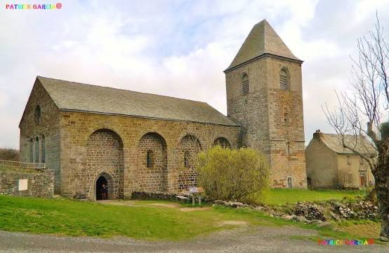
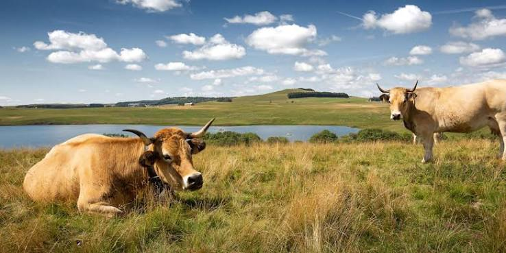

Sur les hautes terres du plateau, à 1 307 mètres d'altitude, Aubrac n'est pas un village comme les autres : c'est un simple hameau de quelques dizaines d'âmes qui a pourtant donné son nom à tout un plateau, à une région et à une race bovine. Son nom viendrait du latin « Alto Braco », le « lieu élevé », ou du rouergat « brac », la « boue », en écho aux nombreuses tourbières qui recouvrent ce vaste causse granitique battu par les vents.

Les vestiges de la Dômerie d'Aubrac, sur le plateau battu par les vents
Tout commence au XIIe siècle, quand un chevalier flamand, Adalard, aurait été surpris par une tempête de neige en traversant ce plateau désolé sur la route de Compostelle. Réchappé du danger, il y fonde vers 1120 une dômerie : un hospice tenu par des chanoines-hospitaliers, dont l'abbé portait le titre de « dom ». Cette institution accueille pèlerins, marchands et voyageurs égarés sur la Via Podiensis, l'un des chemins historiques vers Saint-Jacques-de-Compostelle, entre Le Puy-en-Velay et Conques.
Pendant plus de six siècles, les moines de la dômerie façonnent le plateau tout entier : ils aménagent les drailles, ces chemins de transhumance encore empruntés aujourd'hui, assèchent les tourbières et défrichent la forêt primitive pour créer les vastes pâturages d'estive qui font la réputation du pays. Guerre de Cent Ans, guerres de Religion puis Révolution française auront finalement raison de cette abbaye, l'une des plus puissantes du chemin de Compostelle entre Le Puy et Conques. Il n'en reste aujourd'hui que trois bâtiments : l'église Notre-Dame-des-Pauvres, classée Monument historique, la Tour des Anglais et une partie de l'ancien hôpital, sentinelles solitaires sur l'immensité du plateau.
🐄
Visite pratique

Le plateau de l'Aubrac, terre d'estive et de burons
⏱️
Durée
Environ 1h de visite, davantage avec les randonnées
📊
Difficulté
Facile dans le hameau, terrain nu et venteux alentour
🚗
Accès
Plateau de l'Aubrac, à cheval sur la Lozère et l'Aveyron
🎟️
Tarif
Hameau et église en accès libre
✦ Infos pratiques
Église Notre-Dame-des-Pauvres Vestige de la dômerie, classée Monument historique
Tour des Anglais Tour défensive médiévale, dernier témoin du castrum de la dômerie
GR 65 Chemin de Saint-Jacques-de-Compostelle, étape entre Nasbinals et Saint-Chély-d'Aubrac
Cloche des Perdus Sonnée jadis les nuits de brouillard pour guider les voyageurs égarés
Race bovine Aubrac Vaches fauves aux yeux cerclés de noir, emblèmes du plateau
Fête de la transhumance Le week-end le plus proche du 25 mai, troupeaux fleuris
Burons Anciennes cabanes de pierre où se fabriquait le fromage d'estive
Aligot Spécialité locale à déguster dans les auberges du hameau
1
L'église Notre-Dame-des-Pauvres
Seul vestige encore consacré de la dômerie, cette église romane austère, bâtie dans le granit du plateau, accueillait jadis les offices destinés aux pèlerins et aux pauvres de passage.
2
La Tour des Anglais
Vestige défensif de l'ancien castrum de la dômerie, cette tour de granit veillait sur le hameau et ses pèlerins aux heures troublées de la Guerre de Cent Ans.
3
Le plateau et les burons
Tout autour du hameau, les burons de pierre sèche, autrefois ateliers de fabrication du fromage d'estive, ponctuent les pâturages à perte de vue.
4
Le GR 65, chemin de Compostelle
Aubrac reste une étape mythique de la Via Podiensis, où des milliers de marcheurs franchissent chaque année ce plateau nu avant de rejoindre Nasbinals ou Saint-Chély-d'Aubrac.
5
La fête de la transhumance
Chaque printemps, les troupeaux décorés de fleurs et de cloches traversent le hameau en musique, perpétuant un rite pastoral vieux de plusieurs siècles.
🏆
Reconnaissance & patrimoine
🥾
Chemins de Saint-Jacques-de-Compostelle, UNESCO
La Via Podiensis, qui traverse Aubrac, est inscrite au Patrimoine mondial de l'UNESCO au titre des chemins de Saint-Jacques-de-Compostelle en France.
Dernier sanctuaire encore ouvert au culte de l'ancienne dômerie, ce vestige roman du XIIe siècle est protégé au titre des Monuments historiques.
MH
🐮
Berceau de la race bovine Aubrac
Le plateau a donné son nom à cette race rustique reconnaissable à sa robe fauve et au cerclage noir de ses yeux, aujourd'hui exportée dans le monde entier.
Race labellisée
🎉
Fête de la transhumance
Célébrée depuis 1993 le week-end le plus proche du 25 mai, cette fête populaire perpétue la montée traditionnelle des troupeaux vers les estives.
Depuis 1993
🐮
La transhumance, âme du plateau
Chaque année, vers le 25 mai, les vaches Aubrac quittent les étables des vallées pour rejoindre les pâturages d'altitude où l'herbe, courte et parfumée, leur assurera plusieurs mois de vie au grand air. Cette montée aux estives, héritée du travail des moines de la dômerie qui organisèrent jadis les premiers pâturages collectifs, reste aujourd'hui un moment fort de la vie locale, entre nécessité agricole et grande fête populaire.
La transhumance n'a pas seulement une fonction agricole : elle constitue aussi une véritable fête pour les habitants, qui marque chaque année le début de la belle saison.
— Office de Tourisme de l'Aubrac
Le jour venu, les troupeaux sont parés de fleurs, de pompons colorés et de grandes cloches, puis conduits en procession jusqu'aux pâturages sous les yeux des visiteurs venus nombreux assister au spectacle. Sur le plateau, les anciens burons de pierre sèche, où se fabriquait autrefois le fromage durant l'estive, témoignent encore de ce pastoralisme séculaire, tout comme l'aligot, plat emblématique né, dit-on, du mot latin « aliquid » (« quelque chose ») que les pèlerins affamés réclamaient jadis à la porte de la dômerie.
💬
Le saviez-vous ? Anecdotes aubragnates
🌨️
Le chevalier perdu dans la tempête
Selon la légende fondatrice, c'est un chevalier flamand nommé Adalard, égaré par une tempête de neige sur ce plateau hostile, qui aurait fondé la dômerie en guise d'action de grâce.
🔔
La cloche des Perdus
Les nuits de brouillard, les moines faisaient sonner une cloche depuis la dômerie afin de guider vers l'hospice les voyageurs égarés sur le plateau désert.
🍲
« Aliquid », l'origine de l'aligot
Le pèlerin affamé qui frappait à la porte de la dômerie demandait en latin « aliquid », « quelque chose à manger » : le mot aurait, au fil des siècles, donné naissance à « aligot ».
🐄
Un hameau, un plateau, une race
Il faut s'y reprendre à deux fois : Aubrac désigne à la fois ce minuscule hameau, l'ensemble du plateau environnant et la célèbre race bovine qui en tire son nom.
📍
Aux alentours
Nasbinals village-étape sur le GR 65, célèbre pour son église romane Sainte-Marie et sa cascade du Déroc, à une vingtaine de minutes.
Saint-Chély-d'Aubrac autre porte d'entrée du plateau côté aveyronnais, où se tient chaque année l'une des grandes fêtes de la transhumance.
Col de Bonnecombe haut lieu de la transhumance lozérienne, où troupeaux et randonneurs se croisent au cœur des estives.
Laguiole capitale aveyronnaise du couteau et du fromage, à une trentaine de minutes au sud du plateau.
Cascade du Déroc chute d'eau de 30 mètres née du ruisseau du Gambaïse, une agréable pause de randonnée sur le plateau.
Aumont-Aubrac autre étape jacquaire, porte nord du plateau vers la Margeride.